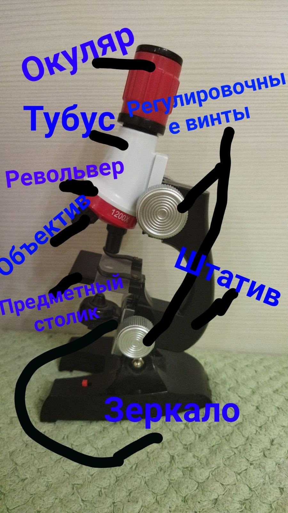

ответ на вопрос № 1
Измерение, эксперемент, описание, наблюдение и биологический опыт
ответ на вопрос № 2
Биологический опыт отличается от наблюдения тем, что в биологическом опыте мы изменяем что-то, а в наблюдении просто смотрим
ответ на вопрос № 3
При увеличение в 200 раз мы увидим очень большой размер предмета
ответ на вопрос № 4
Лупу можно использовать тогда когда предмет среднего размера, а микроскоп для очень маленьких предметов(организмов) к примеру бактерии или микробы
ответ на вопрос № 5
Если покрутить регулеровачные винты то можно добится до определёного размера и увидеть чёткое изображение
ответ на вопрос № 6
Когда животные далеко и невороужёным глазом их плохо видно
Лабороторная работа № 1
Окуляр служит чтоб смотреть через стёкла на предмет; тубус в нём очень много увелечительных стёкл; регулеровачные винты чтоб отрегулировать нужное расстояние и получить чёткий кадр; револьвер держит объективы; объектив делают разную велечену; предметный столик чтоб туда ложить объект; штатив держит остальные части микроскопа и зеркало освещает предметный столик
Практическая работа № 1

с первых десяти дней видно, что с лева изображена фасоль с робочего стола. По центру с окна, а с права фасоль с холодильника

Спустя 20 дней в томже порядке видна фасоль, но размерами отличается

Спустя 30 дней в томже порядке размещена фасоль мы увидили, что фасоль с холодильника только пустила корешки